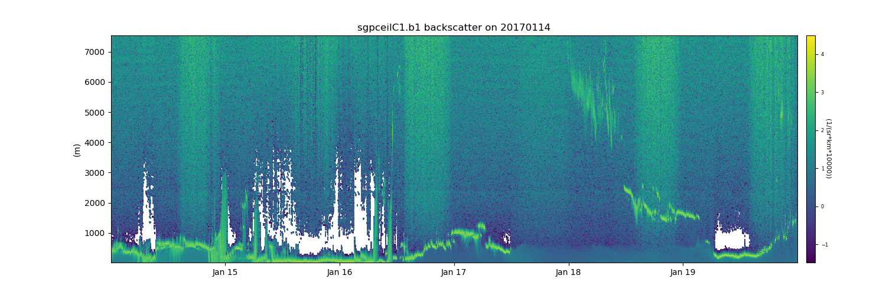

Atmospheric Community Toolkit (ACT)¶
The Atmospheric Community Toolkit (ACT) is a Python toolkit for working with atmospheric time-series datasets of varying dimensions. The toolkit is meant to have functions for every part of the scientific process; discovery, IO, quality control, corrections, retrievals, visualization, and analysis. Initial efforts were heavily focused on the static visualization aspect of the process, but future efforts will look to build up the other areas of interest include discovery, corrections, retirevals, and interactive plots.
Free software: 3-clause BSD license

Contributing¶
ACT is an open source, community software project. Contributions to the package are welcomed from all users.
The latest source code can be obtained with the command:
git clone https://github.com/ARM-DOE/ACT.git
If you are planning on making changes that you would like included in ACT, forking the repository is highly recommended.
We welcome contributions for all uses of ACT, provided the code can be distributed under the BSD 3-clause license. For more on contributing, see the contributor’s guide.
Testing¶
After installation, you can launch the test suite from outside the source directory (you will need to have pytest installed):
$ pytest --pyargs act
In-place installs can be tested using the pytest command from within the source directory.